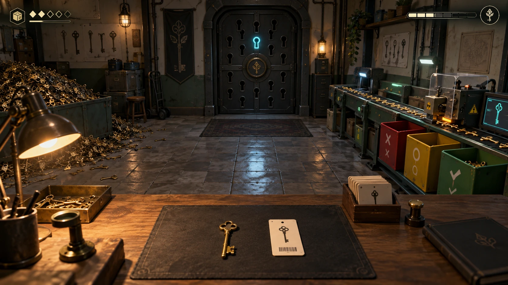

새것처럼 빛나는 표면

온 세상의 열쇠가 한 방으로 쏟아져 들어온다. 검사하고, 고쳐서 등록하고, 존재해서는 안 되는 것은 격리하라.
문이 사라져도
국가의 접근 권한은
소멸하지 않는다.공국 열쇠관리 규정 제1조
열쇠 제작과 관리는 국가가 독점한다. 당신은 폐쇄·철거된 건물의 열쇠를 회수하며, 사람 대신 투입구와 인쇄 지침으로 업무를 받는다.
새것처럼 빛나는 표면
누군가 사용한 마모 흔적
문의 구멍에 새겨진 번호
등록한 열쇠가 닳은 상태로 돌아온다. “존재 여부를 확인하려고 문을 열지 말 것.” 새 지침이 금지한 번호는 안쪽 문에도 있다.
관리국은 사라진 문들의 접근 권한을 보존하고 있었다. 마지막 문 너머에서 같은 작업실의 투입구를 발견한다. 조명과 지침은 바뀌고, 업무는 계속된다.
열쇠를 집으면 접수표와 나란히 놓이고, 드래그로 돌려 본다. K-302는 세 번째 홈만 얕다. 번호와 몸통은 맞으므로 그 홈을 수선한다.
작동 여부와 무관
수선 후 다시 검사
국가 보관함으로 이송
수리 대기는 중간 단계다. 번호 불일치는 수리 대기에 보류하고, 복원 지시가 확인된 각인만 수정한다. 검증되지 않은 열쇠는 등록하지 않는다.
홈을 선택하고 줄을 왕복해 깊이를 조절한다. 깎인 모양, 떨어지는 금속 가루, 거칠어지는 소리가 진행을 알려준다. 줄을 놓으면 즉시 멈춘다.
끝까지 돌아가는 손잡이
수선한 K-302를 시험 장치에 꽂아 돌린다. 핀이 정렬되면 짧은 금속음과 회전으로 성공을 알린다. 너무 깊게 깎았다면 새 원형으로 다시 만든다.
홈은 정확하다.
문 없음 · 격리 대상
등록 금지지침이 우선한다
시험 장치는 열쇠가 맞는지만 알려준다. N-000은 돌아가도 개정 지침상 격리 대상이다. 업무가 진행될수록 짧은 규칙이 하나씩 추가되어 같은 열쇠를 다르게 보게 한다.
기존 규격으로 재작업
틀린 이유와 함께 반송
보관함에서 다시 확보
오류는 이유가 표시된 재작업으로 돌아온다. 올바른 등록·수리·격리는 모두 보상하며, 금전 부족으로 진행을 막지 않는다. 게임오버와 영구 손실 없이 다시 시도한다.
검사등 · 수동 줄
홈 게이지 · 절삭 지그 · 각인기
묶음 집게 · 선별 라인
정확히 처리한 보상으로 정해진 자리에 설비를 설치한다. 장비는 새 동작을 주고 작업대의 풍경을 바꾼다. 반복 물량만 처리해도 개선을 이어갈 수 있다.
설정된 규격만 자동 처리
미등록 번호 · 충돌 · 판독 불가
선별기는 설정된 기준으로만 처리하고 예외는 검사대로 돌린다. 개정문을 받으면 설정을 갱신하고 표본을 확인한다. 오래된 설정의 오분류도 재검사로 복구한다.
따뜻한 검사등 아래에서 줄질·각인·낙하음이 작업 리듬을 만든다. 적체가 줄수록 바닥과 안쪽 문의 단서가 드러난다. 주요 열쇠는 진행에 맞춰 확정 등장하고, 대응하는 문 구멍에 불을 켠다.
손작업의 즉각적인 보상
같은 구도의 성장 비교
짧게 보여주는 미스터리
결말 뒤에도 새 물량이 투입함으로 들어온다. 장비·기록·정리된 공간은 유지되고, 형식과 패턴을 조합한 검사·수선·격리를 자기 속도로 이어간다.